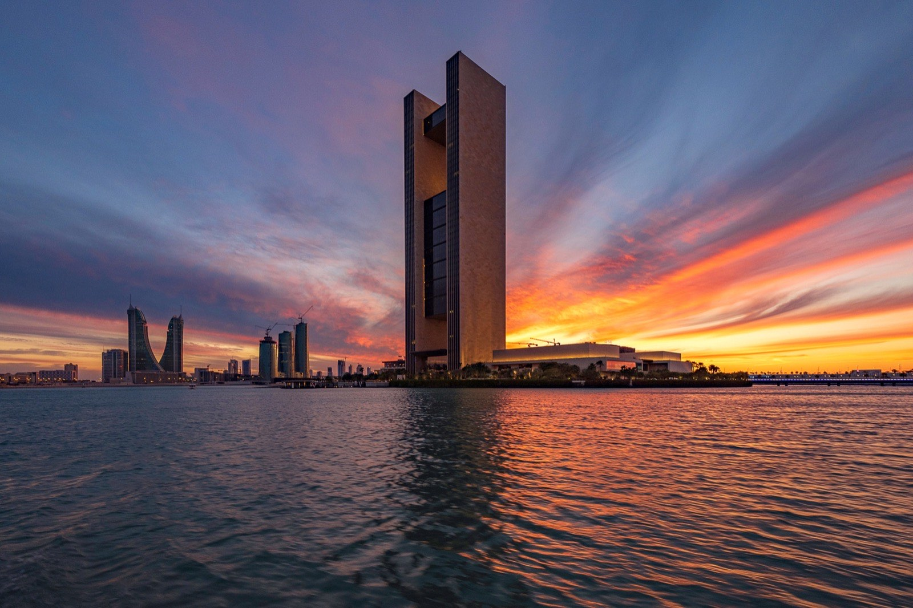
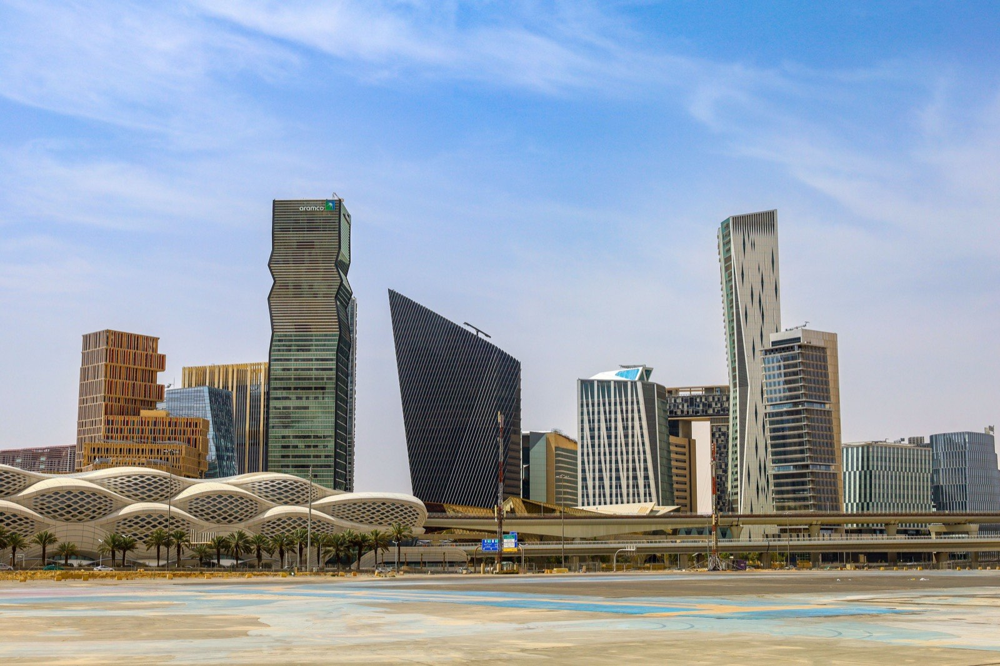
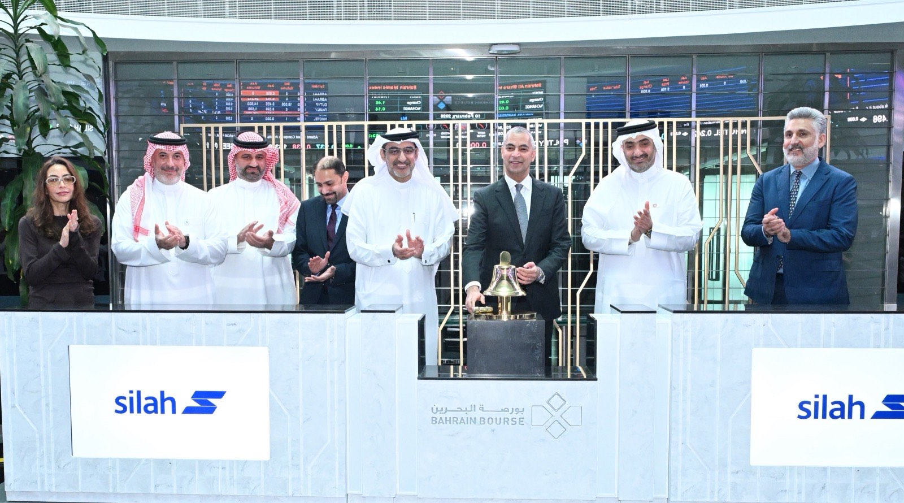
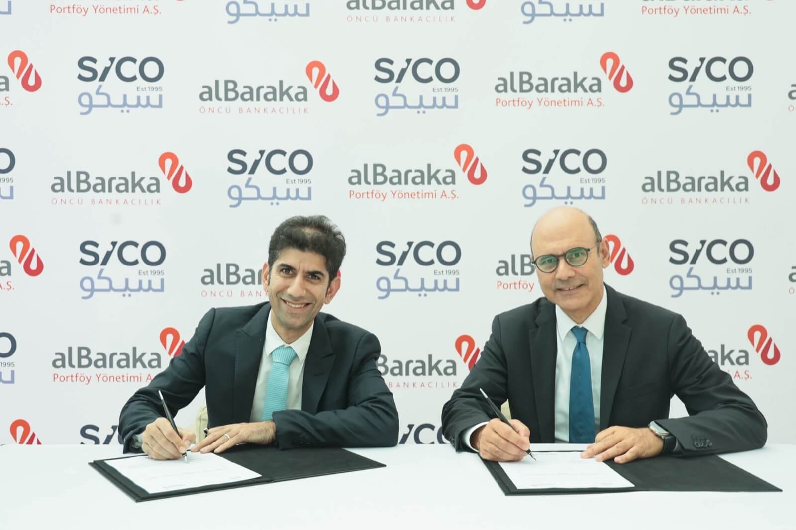
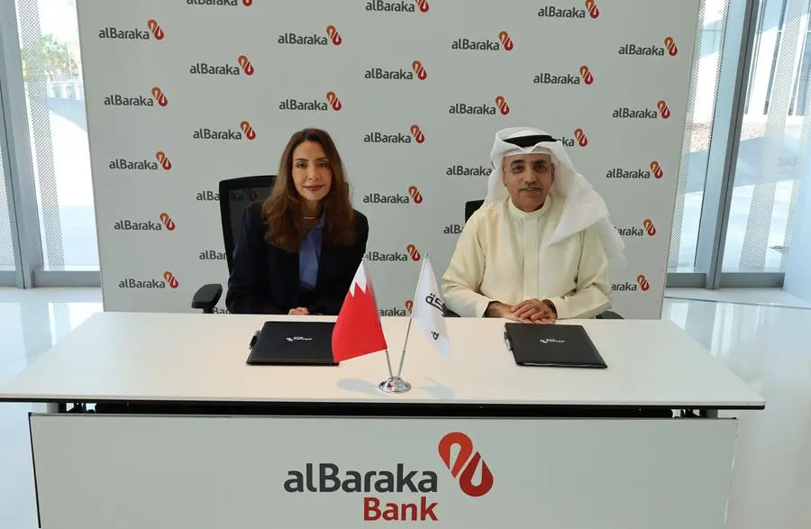
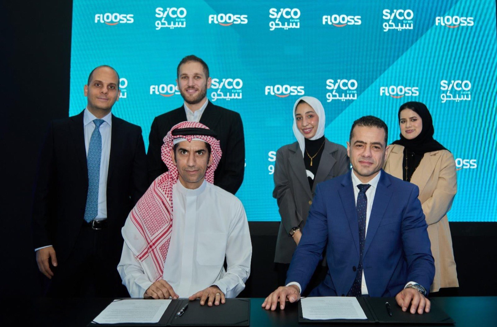
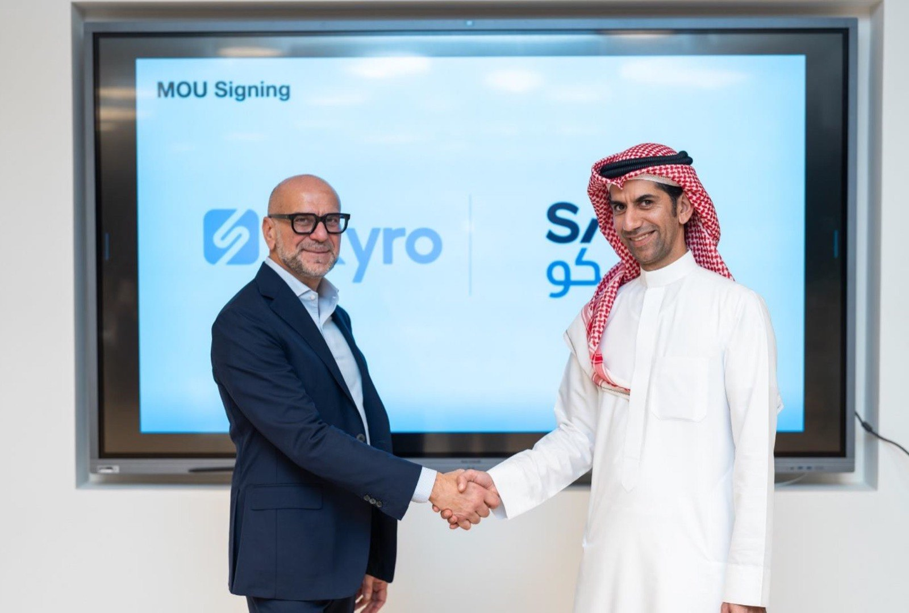

During the Gateway Gulf 2025 forum, SICO announced a USD 500 million expansion of new investment products and transactions. The initiative includes USD 450 million in new asset management funds, featuring quantitative equity strategies and specialized mandates focused on Türkiye and gold, alongside approximately USD 50 million in investment banking transactions.
This expansion reflects SICO's continued commitment to supporting regional economic diversification while connecting international capital to opportunities across GCC markets.

SICO Capital increased its paid-up capital from SAR 60 million to SAR 100 million to support the continued expansion of its operations in Saudi Arabia. The capital increase strengthens the company's financial position and reinforces its long-term commitment to the Saudi market, enabling further growth across its asset management, brokerage, and investment banking businesses.

SICO successfully concluded the initial public offering (IPO) of Silah Gulf, which was oversubscribed four times, generating total demand exceeding BHD 11.4 million.
The offering represented 30% of the company's share capital and attracted strong participation from both professional and retail investors. Silah Gulf shares commenced trading on the Bahrain Bourse on 10 February 2026, with SICO acting as lead manager for the transaction.

In partnership with Albaraka Portfolio Management Company, SICO launched the Albaraka Türk Value & Wealth Türkiye Sukuk Fund, the first of its kind established in Bahrain. The open-ended fund primarily targets Sharia-compliant fixed-income instruments and Sukuk issued by sovereign and corporate entities in Türkiye. With an initial target size of USD 50 million, the fund aims to provide international investors with direct access to Türkiye's growing Islamic finance market. This initiative reinforces SICO's strategic objective to expand its cross-border reach and offer diversified investment solutions in high-growth markets.

SICO entered into a distribution agreement with AlBaraka Islamic Bank (ABIB) to offer the Shariah-compliant Elzaad Sukuk Fund to the bank's premium banking clients. The partnership aims to broaden access to high-quality fixed-income investments and strengthen the Islamic finance ecosystem in Bahrain. The fund has demonstrated a strong performance track record and recently recorded an annualized return of 6.8%.


SICO was appointed by Bahrain-based digital financing platform Flooss to structure a securitization Sukuk issuance of up to USD 10 million.
The transaction introduces a new Shariah-compliant financing instrument to Bahrain's capital markets and supports Flooss in diversifying its funding sources to support continued growth. The collaboration reflects SICO's commitment to developing innovative financing solutions and advancing Islamic capital markets in the Kingdom.
SICO and Skyro UAE signed a Memorandum of Understanding during Abu Dhabi Finance Week 2025 to expand retail access to investment products through digital platforms.
Under the partnership, the two companies will collaborate to provide streamlined access to money market funds, bonds, and fractional investment solutions. The initiative supports regional efforts to enhance financial inclusion and broaden access to investment opportunities for retail investors.

SICO published the fifth edition of its flagship report on Investor Return Expectations in the GCC for 2026.
The report highlights resilient investor sentiment across the region despite global economic uncertainty and inflationary pressures. It also points to strong optimism for the UAE, supported by sector growth and population expansion, alongside steady confidence in Saudi Arabia. The study captures the evolving outlook of the regional investment community and the key themes shaping the GCC's financial landscape.